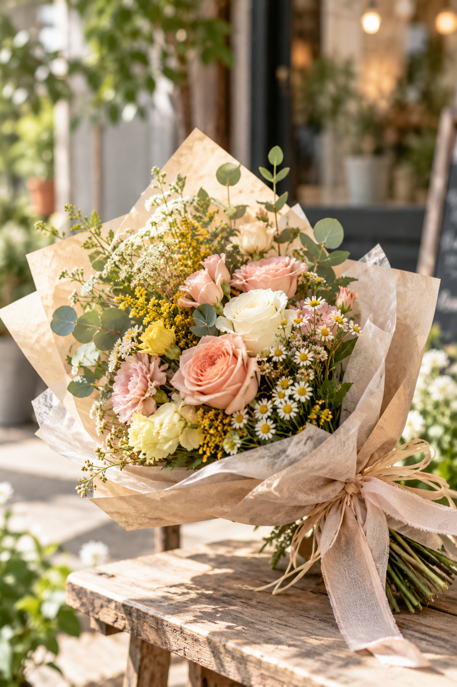
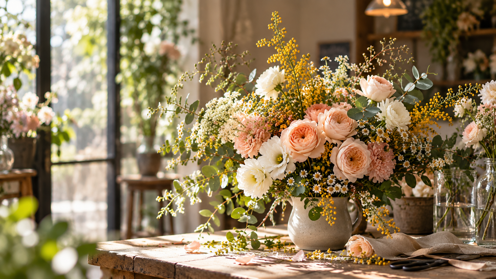
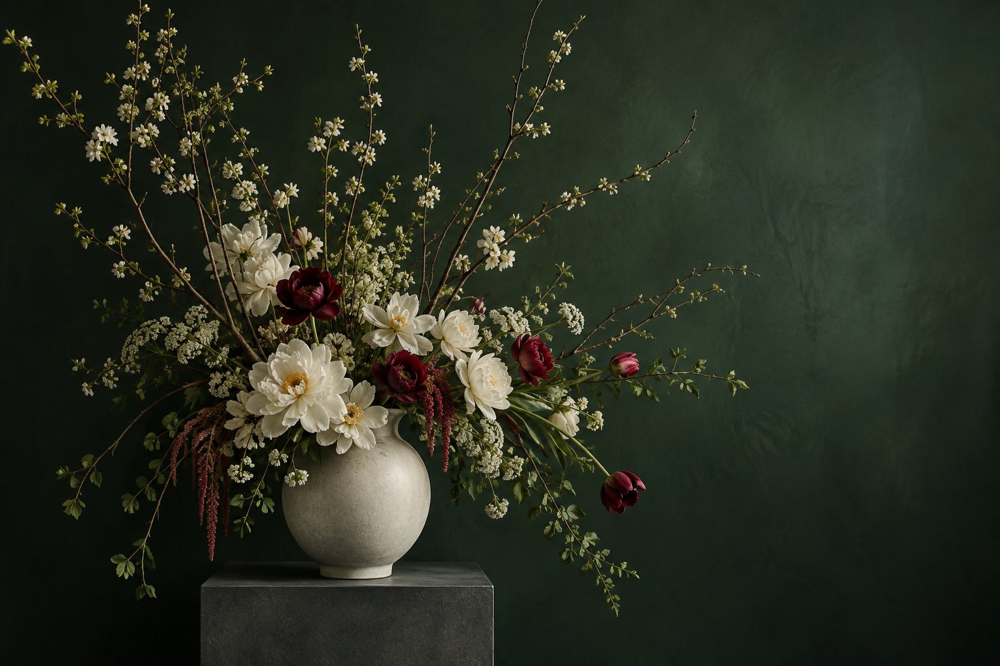
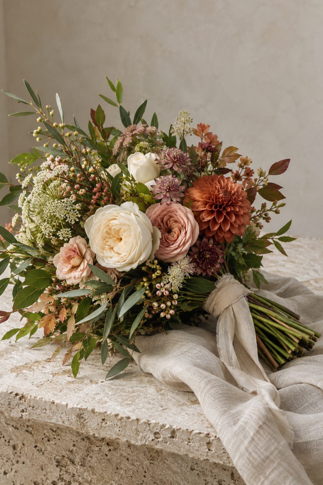

01
BOUQUET
花束
FLOWER SHOP / FUKUOKA
日常に、花をひとつ。
大切な人への贈りものにも、いつもの暮らしにも。
季節の花を、一人ひとりの想いに合わせて。

ABOUT TUMIKI FLOWER
TUMIKI Flowerは、花をもっと身近に楽しんでもらうための架空のフラワーショップです。
一輪の花から、大切な日の花束まで。季節の花とともに、日々の暮らしに小さな彩りを届けます。
FLOWERS / SERVICE
お取り扱いについては、Instagramまたはお電話でお問い合わせください。

花束
フラワーアレンジメント

フラワースタンド

プリザーブドフラワー
ギフトアイテム
FLOWERS FOR
YOUR MOMENTS
TUMIKI Web. Web Design Portfolio / Fictional Shop
商品や営業に関する最新情報をお届けする、Instagram導線のデザイン例です。
SHOP INFORMATION
ACCESS
福岡県福岡市Fictional Flower Shop
この店舗はTUMIKI Web.の
Web制作ポートフォリオ用に設定した
架空のフラワーショップです。
CONTACT